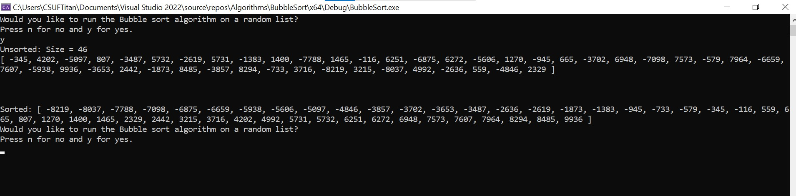
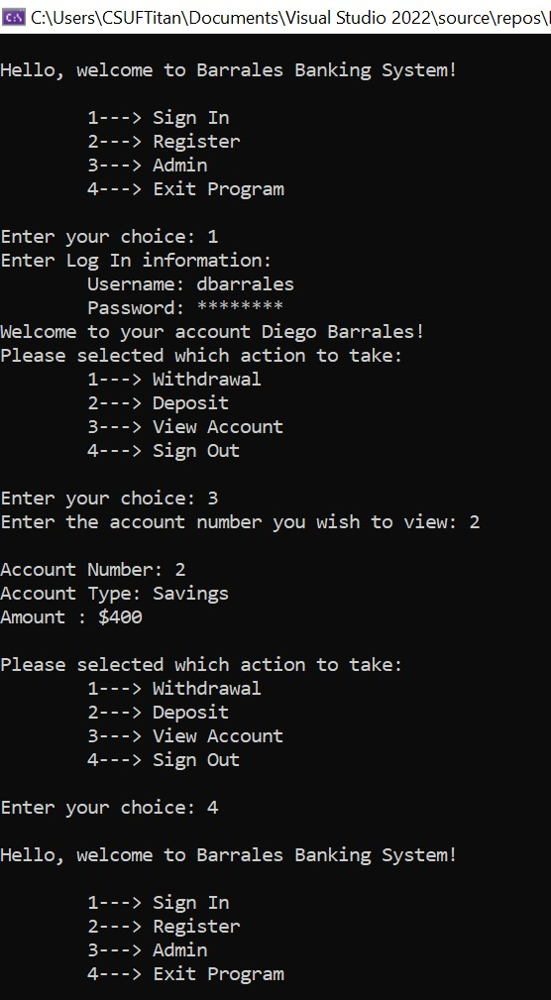

Hello my name is Diego Barrales and these are some projects that I have been working on to help me understand code, operating systems, programming languages, and other related programs.
Bubble sort was a simple sorting algorithms to learn and code. It required 3 methods to implement which were easy to writing into a bubble sort class. In addition, I had to come up with an algorithms to randomly create unsorted arrays of ints for the bubble sort class to sort. The way this works is it creates an array of a max size of 1000, and inputs random integers between -1000 to 1000 into it. After that you intialize a BubbleSort object with that unsorted list of ints, and call the sort function.
This Bank Record system was created to help me learn more about Windows file system and how c++ handles file management. I thought about how I should record information that changes during runtime. I figured that the best way to go about it would be to treat the file like an api request. What I mean is that I would retrieve data from the file and put it into a data structure. This way during runtime I could make changes to the data from within the data structures. And finally record those changes by writing to the file at the end of the objects lifetime. So the best way was to write a constructor to read in data from a file, and a deconstructor to write data to a file.
During the 2022 Spring Semster, I enrolled into a Swift programming langauge course(CPSC 223W). In which we learn Swift and worked on an app as our semster long project. This project is trying to create an application that can help travelers be stress-free, allow travelers to focus more on enjoying their traveling experience, rather than being stressed out over paperwork and passports, and allowing travelers to have all of their information in one application. This project was the first time I really worked with a team to create a well rounded app with many features. My sections of the app were the main page and seat map tab. I also worked on the backend of the app by creating a database of information about airplanes and airlines and more. So, many of backend files were also written by me for my team to utilize.
This website was a project in which I got to learn HTML, CSS, and JAVASCRIPT. My IDE of choice was replit because it allowed me to see my changes as I saved my work. In addition, I got to learn about github pages and how to deploy my own website to share with others.